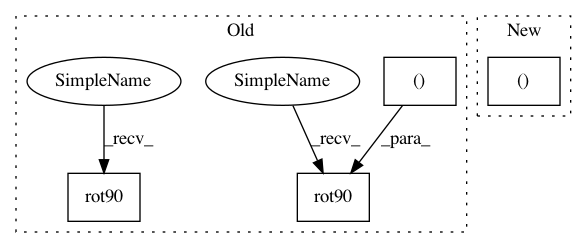

422881afa09ccd1e5a19ae31a38638e04d6eae7d,plot_localizer_simple_analysis.py,,,#,23
Before Change
// Plot Anova p-values
plt.figure(figsize=(5.5, 5.5))
masked_pvals = np.ma.masked_less(neg_log_pvals_anova_unmasked.get_data(), vmin)
plt.imshow(np.rot90(nifti_masker.mask_img_.get_data()[:, :, picked_slice]),
interpolation="nearest", cmap=plt.cm.gray)
im = plt.imshow(np.rot90(masked_pvals[:, :, picked_slice]),
interpolation="nearest", cmap=plt.cm.autumn,
vmin=vmin, vmax=vmax)
plt.axis("off")
After Change
threshold = - np.log10(0.1) // 10% corrected
// Plot Anova p-values
fig = plt.figure(figsize=(5, 6), facecolor="w")
display = plot_stat_map(neg_log_pvals_anova_unmasked,
cmap=plt.cm.autumn, threshold=threshold,
display_mode="z", cut_coords=[z_slice],
In pattern: SUPERPATTERN
Frequency: 3
Non-data size: 4
Instances
Project Name: nilearn/nilearn
Commit Name: 422881afa09ccd1e5a19ae31a38638e04d6eae7d
Time: 2014-11-24
Author: loic.esteve@ymail.com
File Name: plot_localizer_simple_analysis.py
Class Name:
Method Name:
Project Name: nilearn/nilearn
Commit Name: 422881afa09ccd1e5a19ae31a38638e04d6eae7d
Time: 2014-11-24
Author: loic.esteve@ymail.com
File Name: plot_localizer_simple_analysis.py
Class Name:
Method Name:
Project Name: nilearn/nilearn
Commit Name: 649db8e4c5e5a92ee8be8dea4f410a9719024f20
Time: 2014-06-17
Author: chris.gorgolewski@gmail.com
File Name: plot_canica_resting_state.py
Class Name:
Method Name:
Project Name: suragnair/alpha-zero-general
Commit Name: ca1f2c5479000ced7b8f785a27f446be3ed4a46f
Time: 2019-05-27
Author: threedliteguy@users.noreply.github.com
File Name: tafl/TaflGame.py
Class Name: TaflGame
Method Name: getSymmetries